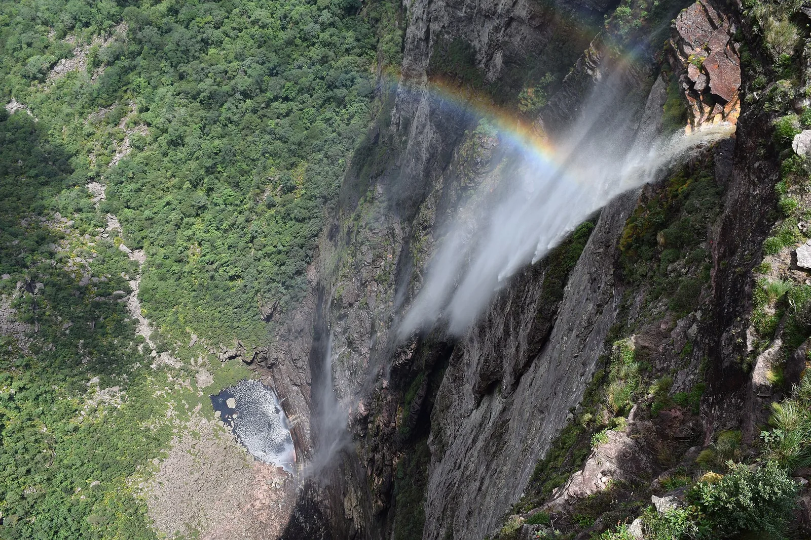
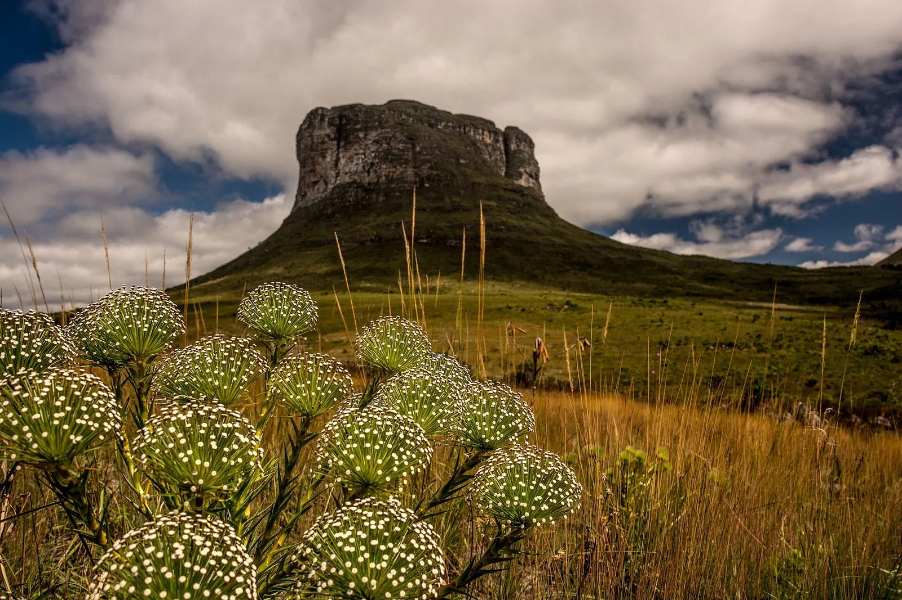
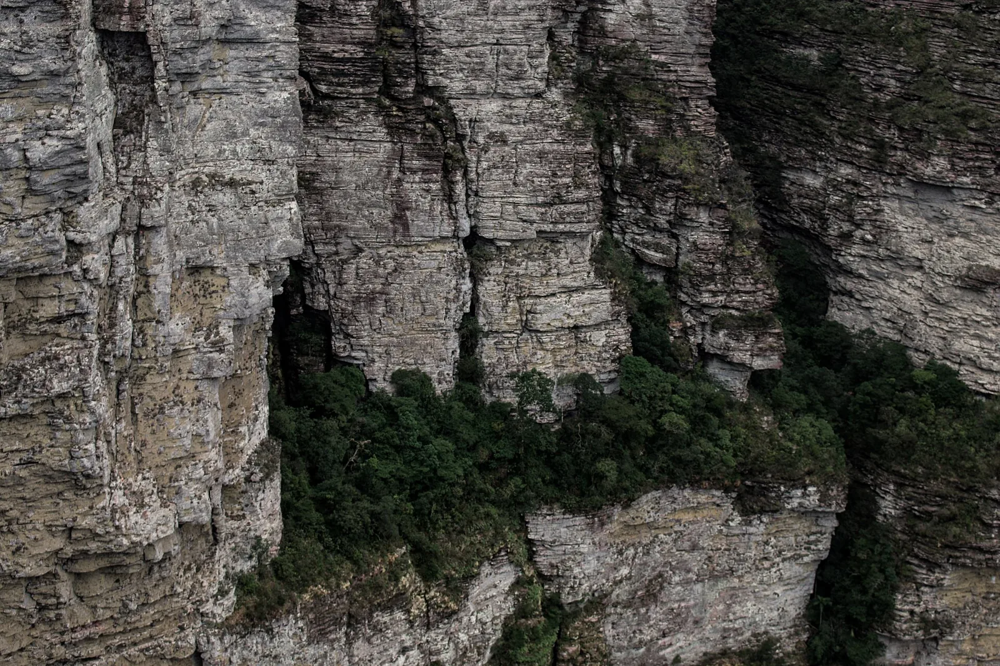

E6 · Este
E6 · Osten
E6 · East
Cachoeira da Fumaça
y una cascada que cae trescientos ochenta metros sin tocar nada.
und einen Wasserfall, der dreihundertachtzig Meter fällt, ohne irgendetwas zu berühren.
and a waterfall that drops three hundred and eighty metres without touching a thing.
Información
La Cachoeira da Fumaça está en el Parque Nacional da Chapada Diamantina, en Bahía. Con unos 340 metros es la segunda cascada más alta de Brasil. El caudal es tan fino y la caída tan larga que el agua se deshace en neblina antes de llegar abajo: de ahí el nombre.
Para llegar al borde hay que caminar seis kilómetros. El parque protege 152.141 hectáreas y fue creado por decreto en septiembre de 1985.
La Chapada Diamantina está en el límite de dos biomas y forma parte de las Reservas de Biosfera de la Caatinga y de la Mata Atlántica.
Information
La Cachoeira da Fumaça está en el Parque Nacional da Chapada Diamantina, en Bahía. Con unos 340 metros es la segunda cascada más alta de Brasil. El caudal es tan fino y la caída tan larga que el agua se deshace en neblina antes de llegar abajo: de ahí el nombre.
Para llegar al borde hay que caminar seis kilómetros. El parque protege 152.141 hectáreas y fue creado por decreto en septiembre de 1985.
La Chapada Diamantina está en el límite de dos biomas y forma parte de las Reservas de Biosfera de la Caatinga y de la Mata Atlántica.
Information
La Cachoeira da Fumaça está en el Parque Nacional da Chapada Diamantina, en Bahía. Con unos 340 metros es la segunda cascada más alta de Brasil. El caudal es tan fino y la caída tan larga que el agua se deshace en neblina antes de llegar abajo: de ahí el nombre.
Para llegar al borde hay que caminar seis kilómetros. El parque protege 152.141 hectáreas y fue creado por decreto en septiembre de 1985.
La Chapada Diamantina está en el límite de dos biomas y forma parte de las Reservas de Biosfera de la Caatinga y de la Mata Atlántica.
El fuego es la amenaza principal de la Chapada Diamantina. Entre 2003 y 2006 el parque registró la mayor cantidad de focos de incendio de todas las áreas protegidas federales de Brasil.
El control del fuego ocupa los períodos secos críticos —de agosto a febrero y de septiembre a diciembre— y durante esa temporada el equipo del parque dedica prácticamente toda su energía y sus escasos recursos a combatirlo, con el apoyo de brigadas voluntarias locales.
El fuego es la amenaza principal de la Chapada Diamantina. Entre 2003 y 2006 el parque registró la mayor cantidad de focos de incendio de todas las áreas protegidas federales de Brasil.
El control del fuego ocupa los períodos secos críticos —de agosto a febrero y de septiembre a diciembre— y durante esa temporada el equipo del parque dedica prácticamente toda su energía y sus escasos recursos a combatirlo, con el apoyo de brigadas voluntarias locales.
El fuego es la amenaza principal de la Chapada Diamantina. Entre 2003 y 2006 el parque registró la mayor cantidad de focos de incendio de todas las áreas protegidas federales de Brasil.
El control del fuego ocupa los períodos secos críticos —de agosto a febrero y de septiembre a diciembre— y durante esa temporada el equipo del parque dedica prácticamente toda su energía y sus escasos recursos a combatirlo, con el apoyo de brigadas voluntarias locales.
Fuentes
Quellen
Sources
- ICMBio, Brasil, Histórico dos incêndios na vegetação do Parque Nacional da Chapada Diamantina (1973-2010), Biodiversidade Brasileira — https://revistaeletronica.icmbio.gov.br/index.php/BioBR/article/view/141
- ICMBio, Brasil, Chapada Diamantina tem a menor área de incêndios — https://www.gov.br/icmbio/pt-br/assuntos/noticias/ultimas-noticias/chapada-diamantina-tem-a-menor-area-de-incendios
Galería
Galerie
Gallery



Fuentes
Quellen
Sources
- ICMBio, Brasil, Parque Nacional da Chapada Diamantina — https://www.gov.br/icmbio/pt-br/assuntos/unidade-de-conservacao/unidades-de-biomas/caatinga/lista-de-ucs/parna-da-chapada-da-diamantina consultado 2026-10-05abgerufen 2026-10-05accessed 2026-10-05